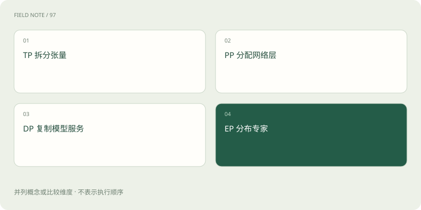

先说这篇在讲什么
四个人一起做饭，可以各做一份完整套餐，也可以有人切菜、有人炒菜，还可以共同完成一道大菜。GPU 的并行也有不同分工，TP、PP、DP、EP 就是常见的几种安排。
先看一个具体例子
两台机器各有多张卡，但机器之间网络较慢。把频繁通信的张量分片跨机器放置，可能不如把完整服务副本分开部署，具体仍取决于模型能否在单机装下。
遇到陌生概念，可以先读
展开前置阅读建议
打个比方，帮助理解
像分办宴席：切一道菜、分烹饪工序、复制厨房、分专门菜系是不同方案。
这是帮助理解的比方，实际过程以正文说明为准。
一图看懂

TP：一起算同一部分
TP 是张量并行。张量可以先理解为多维数组，模型里的大矩阵就属于其中一种。把某些大运算分给多张卡一起算，结果还要交换和合并。它能帮助运行较大的模型，也依赖设备间通信。
PP：不同卡接力完成不同层
PP 是流水线并行。模型的前面几层交给一组设备，后面几层交给另一组，像生产线接力。若只有少量任务，可能出现一部分卡在等上一段的情况，因此切分与任务安排会影响利用率。
DP：各自处理不同样本或请求
DP 是数据并行。训练时，多个副本处理不同数据，再按训练规则同步；服务时，多个独立副本也可以分担用户请求。副本增加主要改善可同时接待多少人，并不等于单个请求自动用上所有副本的显存。
EP：不同设备放不同专家
EP 是专家并行，常见于 MoE 模型。不同专家分布在不同设备，路由把需要的计算交过去。若很多内容集中找同一批专家，就可能出现有人忙、有人闲。几种并行方式还可以组合，但组合后要同时考虑显存、通信与调度。
放在一起对比
| 方式或概念 | 主要作用 | 关键边界 |
|---|---|---|
| TP | 拆张量计算 | 设备间通信 |
| PP | 拆网络层阶段 | 流水线空闲 |
| DP | 复制服务副本 | 不能自然减少单副本权重 |
| EP | 分布专家 | 专家负载不均 |
读完先记住这一句
先问拆的是模型、计算步骤、请求，还是专家，再问用了几张卡。
别踩这个误区
卡越多不保证单请求越快，必须明确是在解决装不下还是处理不过来。
想一想
增加 DP 副本能否自动让每个副本占用更少权重显存？
不能，每个完整副本仍需容纳相应权重，切分权重需要其他并行方式。
关联阅读
资料与边界
本文为原创知识讲解。类比和图示经过简化；示例数字不代表实测或报价。整理日期：2026-11-04。文末列出对应技术的原始资料，具体功能与版本支持请以原文为准。
按完整目录逐篇阅读